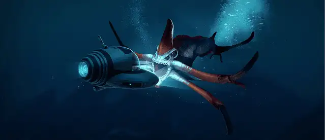
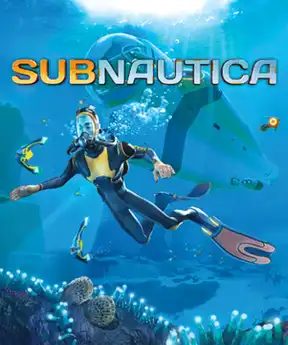

Overview


What is Subnautica?
Subnautica is an open world survival craft game that was released on Steam in early access on December 16, 2014. It was made by the idependent game developing studio Unknown Worlds.
Subnautica takes place in the late 22nd century. The main storyline follows the journey of the Aurora, a space ship on its way to build a phase gate for the transgov of Altera, but gets shot down by an unknown energy source. The Aurora crashlands on the planet 4546B and some survivors manage to get into escape pods. You play as Ryley Robinson who escaped in life pod 5. Now your main goal is to survive, find out what shot down the Aurora, and to find your way off of the planet.
Source for this text
Subnautica Games
- Subnautica
Subnautica was released on Steam in early access on December 16, 2014. It then was fully released for PC on January 23, 2018. - Subnautica Below Zero
Subnautica Below Zero was released on steam in early access on January 30, 2019. It then was fully released for PC on May 2014, 2021. - Subnautica 2
Subnautica 2 was planned to release in early access in late 2025, but due to internal contraversy, has been delayed to be released in mid to late 2026.
As of March 17, Subnautica 2 is back on track to being released and is scheduled for September 2026 or sooner.
Location
Krafton HeadquartersYeoksam Center Field 231, Teheran-ro, Gangnam-gu, Seoul, 06142
Seoul, South Korea
Call us at 800-555-1234 to shcedule a visit